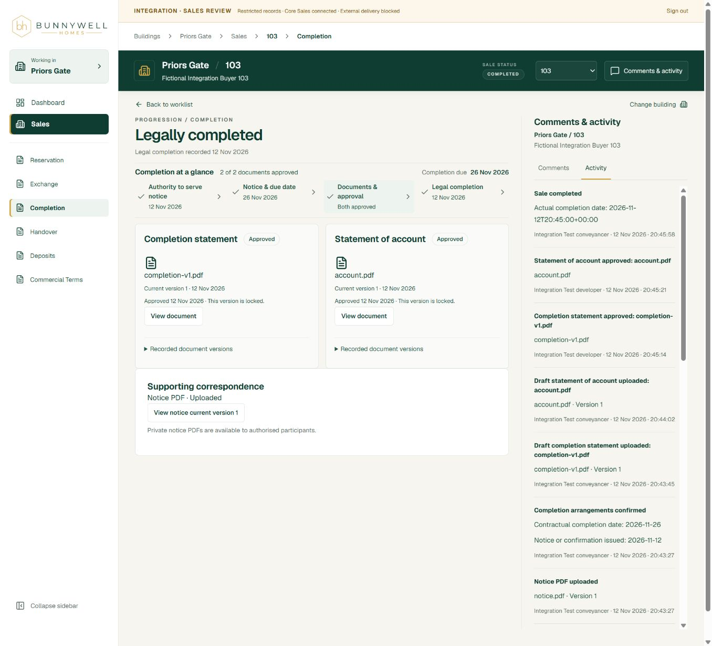

Bunnywell integration · 12 November 2026 · restricted review
Hosted Completion review and core Sales journey
Ready at the same workspace address. Priors Gate 101 passed upload → view → query → revision → approval. Priors Gate 103 passed Reservation → Exchange → notice → Completion approval → legal completion through ordinary authorised browser sessions.
Deployed application commit fbde7b1c565868e03282fbf8adba1820a03c0385
Deployment dpl_3MGNFioJrxp4w1gDZdjetRKW3ZCm
Vercel integration prj_YMaQDDgEtACwTijrmmh1SxQwsfe5 · Supabase mmwzhzziqvjbsphrkbqr.
The selected-data import is accepted as complete. Its original reconciliation evidence, manifest, mappings and recovery exports remain preserved. No legacy staging or production operations; no import replay; no historical users activated; no Forum/Trinity/rental business mutations. Current restricted access retained.
What you can do now
| Workflow | Connected writes and viewing |
|---|
| Reservation | Save draft, upload/replace and privately view the Reservation PDF, submit, query/reject and approve. Current business rules and atomic command checks apply. |
| Exchange | Conveyancer/agent authority request; developer preview and explicit test capture on enrolled fictional journeys; conveyancer Exchange confirmation. |
| Completion | Notice authority request/test capture, notice PDF and dates, document upload/view/query/revision/approval, attributed comments, genuine activity, refreshed counts and conveyancer legal completion. |
| Still read-only/unavailable | Payments, Agent Fee writes, Commercial term editing, Handover finalisation, Snags editing and Setup administration. Other document categories await their connected workflows. No real external delivery. |
Reservation/notice upload limit: 2 MiB. Completion PDF limit: 10 MiB. File access checks the exact sale, role, visibility and redaction; no document bucket was made broadly accessible.
Your Completion walkthrough — Priors Gate 102
The open review browser is signed in as the conveyancer on Priors Gate 102 Completion. Both Completion document slots are empty. Use the existing account-specific credentials in the private review-access file when switching roles; passwords are not reproduced here.
- As conveyancer, choose and upload completion-v1.pdf and account.pdf. View a PDF and add a test comment.
- Sign out and sign in as developer. Raise a query against the Completion statement with a short fictional reason.
- As conveyancer, upload completion-v2.pdf. Check current and previous versions.
- As developer, approve each current document and confirm each approval. Check the dashboard review counts.
- As conveyancer, the actual legal-completion time and confirmation become available once both current documents are approved. This is a fictional test journey; Handover remains separate and unavailable.
Your full journey — available Priors Gate 104
Priors Gate 104 Reservation remains an untouched available draft, with no buyer, documents or workflow events. Its original state is exported; only its private test-capture enrollment was added. Use Fictional Integration Buyer 104, fictional-priors-104@example.invalid, fictional phone/solicitor details and a valid test reservation date.
- As developer, review the recorded commercial terms, enter the fictional buyer, save the draft, upload reservation.pdf, submit and approve.
- As conveyancer, request Exchange authority. As developer, review the preview and choose Capture test authority. As conveyancer, record the actual test Exchange date.
- In Completion, request notice authority; switch to developer to review/capture it. As conveyancer, upload notice.pdf with notice and contractual completion dates.
- Repeat the document cycle using completion-v1.pdf, completion-v2.pdf and account.pdf, then record fictional legal completion.
Genuine hosted evidence
Completion-cycle browser evidence was recorded on 3ab9fd2; the complete core journey on 715771e. The final reviewed successors added safe capture activity, integration preview links and the draft-authority prerequisite. Local endpoint or deployment success was not used as browser acceptance.
| Read check | Observed result |
|---|
| Building versus Sales counts | Forum House 63/62; Priors Gate 64/64; Trinity Point 86/68 |
| Floor order | Forum LG, Ground then configured floors; natural unit order |
| Completed Forum history | LG07: legal completion 5 Oct 2026; 2/2 approved and locked |
| Read-only details | Reservation, Exchange, Deposits, Agent Fees, Commercial and empty Handover state loaded |
| Current Completion PDF | Forum LG01 private PDF opened and rendered |
| Previous Completion PDF | Forum 102 preserved version 1 opened and rendered |
| Snag evidence/activity | Forum LG01 snag 1ccf1f12-f670-472b-bf5f-4724c782a08b: closed status, 2 photos loaded, recorded activity |
| Role visibility | Conveyancer only Dashboard/Sales; Snags denied; developer contributions and solicitor fee hidden |
| Wrong building | agent-single session denied Forum building and snag route |
| Redaction | 308468b0-ae7f-4e80-a4fe-afd24cc53c34 denied in genuine browser session |
| Navigation | Filtered Completed worklist return, dashboard-origin return, building switching, refresh retained scope |
- Conveyancer uploaded completion statement v1 and statement of account on Priors101.
- Current uploaded fictional PDF opened and rendered.
- Comment saved with attributed actor after canonical sequence allocator correction.
- Developer queried statement with reason; conveyancer revised to v2; both versions remained viewable.
- Developer approved v2 and account; 2 of 2 approved; activity showed upload/query/supersession/revision/approvals.
- Priors developer dashboard changed from 3 actions/3 sales after query to 2 actions/2 sales after approval; waiting-on-others remained 12 actions/4 sales.
- Developer drafted Priors103 with fictional buyer; saving draft preserved selected PDF.
- Saving revised Reservation PDF preserved unsaved buyer-phone edit. Current and previous versions retained; Reservation PDF rendered in a private signed browser tab.
- Submitted and approved Reservation using existing commercial calculations; contract price £277,000 and 10/5/85 deposit percentages preserved; fixed deadline 1 Apr 2027 17:00 UK time displayed.
- Conveyancer requested authority; developer reviewed preview and explicitly captured test authority; conveyancer confirmed Exchange. Agent Fees navigation hidden for conveyancer.
- Conveyancer requested notice authority; developer reviewed and captured test authority; conveyancer uploaded notice PDF and dates atomically. Private notice PDF rendered.
- Conveyancer uploaded Completion statement and account and saved attributed comment. Developer confirmed both current approvals.
- Developer dashboard before approvals: 4 actions across 3 sales; after approvals: 2 actions across 2 sales. Waiting-on-others changed 22 to 23 actions as legal-completion action became available.
- Conveyancer recorded fictional actual legal completion 12 Nov 2026 20:45 UTC; UI showed completed, both documents approved and locked, comment sending disabled, notice viewing still available.
- Genuine activity showed reservation uploads/replacement/submission/approval, authority requests, Exchange, notice, Completion uploads/approvals and legal completion.
Final release checks
- fbde7b1: Priors104 draft shows approval prerequisite; authority preview control absent; refresh to usable 3605 ms.
- fbde7b1: Priors103 completed record visible to conveyancer; two test-capture entries visible; approved documents locked and notice view enabled.
- fbde7b1: Priors102 Completion opened as conveyancer with two empty upload controls in 2036 ms; browser left open for user.
- 837ca8e predecessor: agent-single ordinary sign-in denied Priors103 with Building unavailable, no alternative record opened.

Completion query/revision/approval proof · Machine-readable hosted evidence · Exact deployment manifest
Loading observations
Representative hosted actions were about 0.8–1.6 seconds earlier in the run. On the final release, Priors104 refresh-to-usable was 3.605 seconds and Priors102 Completion opened in 2.036 seconds. These are observed browser-action wall clocks including automation overhead, not network-only measurements. One earlier Trinity refresh took 7.904 seconds; no repeated material loading regression was established. The long file-chooser tool delay was excluded.
Separate local/offline validation
- tests24: 21 existing boundary checks + 3 new core boundary checks passed
- coreAdapter: 9 isolated Auth/Postgres/Storage journey groups passed, including retries and role/scope denial through legal completion
- atomicReservationCapture: 16 rollback checks
- commentSequence: 4 rollback checks
- lint: Focused modified TypeScript/components passed
- build: Next 16.2.7 webpack production build passed; Turbopack is incompatible with existing shared node_modules junction
- refreshContracts: 33 checks passed
- captureProjection: 3 local rollback checks: conveyed capture, recipient/arbitrary metadata redaction, wrong-building denial
- finalFocused: 27 discussion/email/core boundary tests passed; lint and final webpack production build passed
Local rehearsals used isolated Auth/Postgres/Storage or rolled-back transactions. They changed no hosted business records. The final production webpack build and focused lint passed.
Exact test-record changes
| Unit | Unit ID / sale ID | Final state / ledger |
|---|
| 101 | 5c874786-7b78-4f35-a430-a39130563979
9c584a87-a447-4869-8e02-53215a3d9373Completion documents approved; not legally completed. All destination IDs · Canonical preparation log |
| 102 | f240d7d5-8b1a-4ee7-9dd9-a0646fb0aa74
29e8c2ba-c02d-4d3c-9803-b0766eae49b3Exchanged, arrangements confirmed; Completion slots empty. All destination IDs · Preparation log |
| 103 | a03763ed-fee0-41d8-85e6-391acf976f80
cb3e40ca-f3fc-4aa4-9108-4151077416f7Legally completed; 4 documents / 5 versions / 31 workflow events. All destination IDs |
| 104 | 58c24b3d-c370-400b-8958-661d061373b1
c749e4a5-1bcf-40fe-b862-1b1ba9663c15Available draft, unchanged business records. Private enrollment only. Verification |
All four are in Priors Gate 35de5f9d-3217-4a11-beaf-83519bda9e5b. Private recovery exports are retained in tmp/hosted-completion/priors-*-before.json. Journals identify related terms, schedule, document/version/storage paths, emails, events and comments. Six explicit test captures across Priors101/102/103. Read-only SQL reconciliation confirms zero sent_at/provider IDs. No invitations or historical account activation.
Remaining limitations
- Populated Handover history could not be checked through a sale route: Forum had no active sale with a Handover; imported Trinity Handovers have no sale attempts. No sale attempts were fabricated.
- Payments, Agent Fee writes, Handover finalisation, Snags editing, Setup administration and real external delivery remain unavailable.
- Document file viewing is scoped to Reservation and Completion/notice versions; other non-Completion document categories remain unavailable pending their workflows.
No sign-in step is currently blocking the delivered Sales workflow. The review browser is ready for the Completion walkthrough.